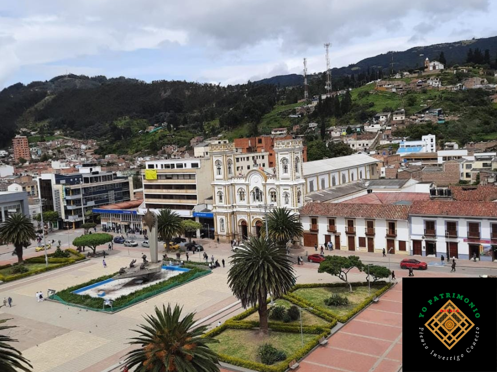

Historia Local
Juan Lorenzo Alcantus
Proyecto de investigación histórica sobre patrimonio cultural desarrollado por el estudiante del Colegio San Martín de Tours.
Leer ProyectoProyectos destacados sobre la recuperación y valoración del patrimonio cultural sogamoseño, desarrollados con pasión por nuestros estudiantes.

Proyecto de investigación histórica sobre patrimonio cultural desarrollado por el estudiante del Colegio San Martín de Tours.
Leer Proyecto
Recuperación de la memoria histórica del ferrocarril en Sogamoso y su impacto en el desarrollo económico de la región.
Leer Investigación